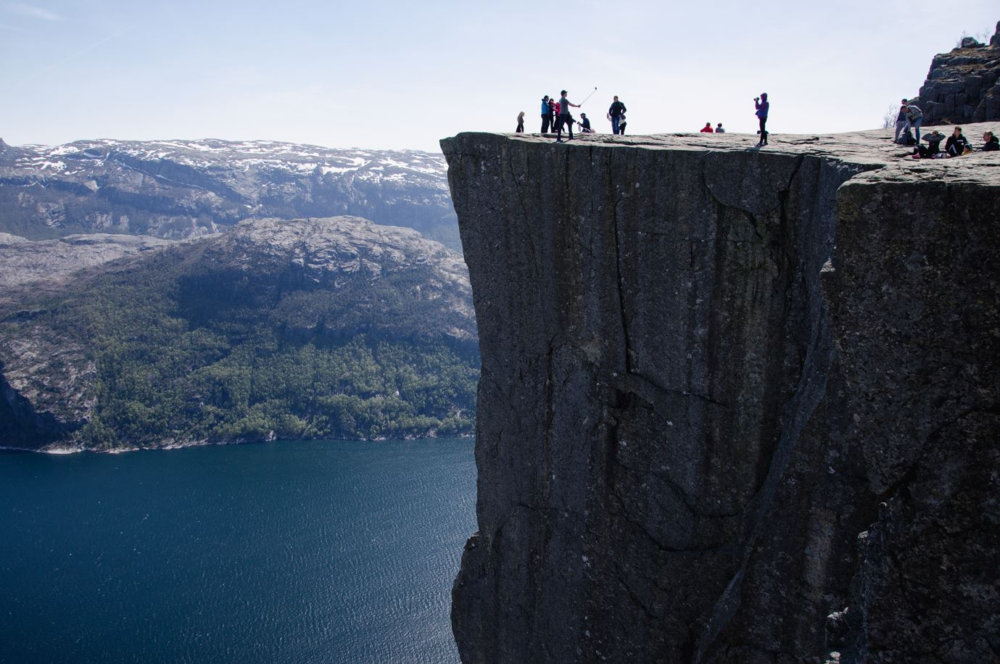
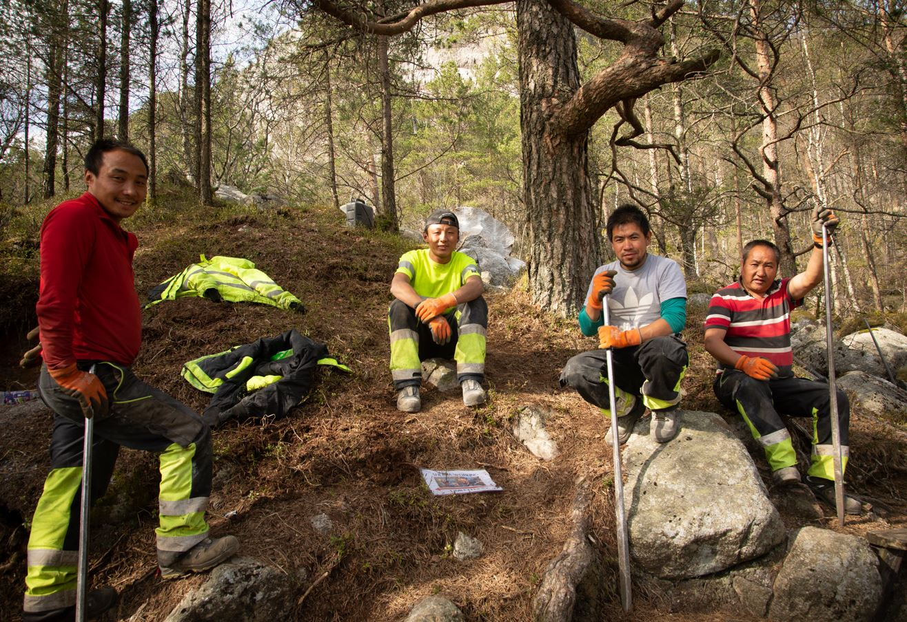
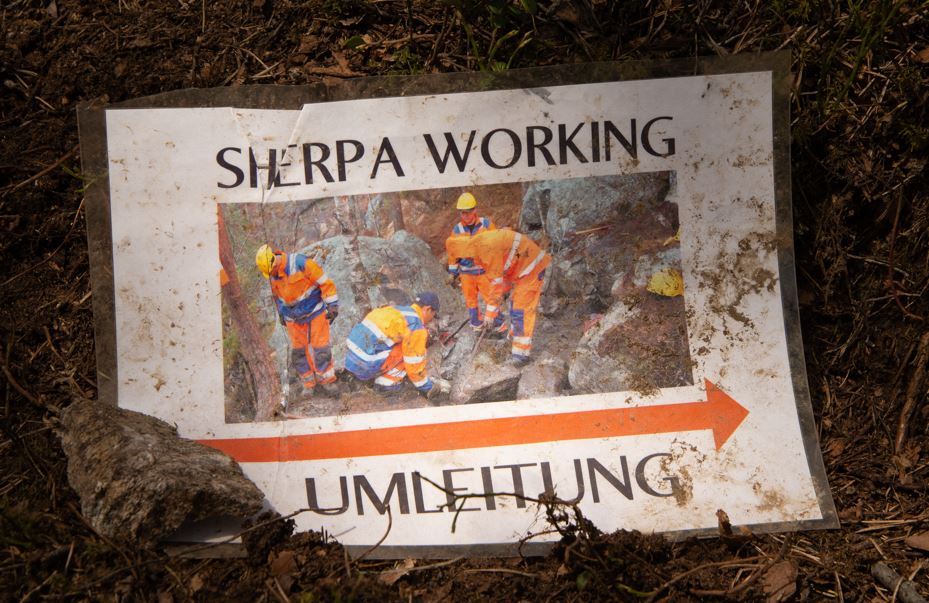
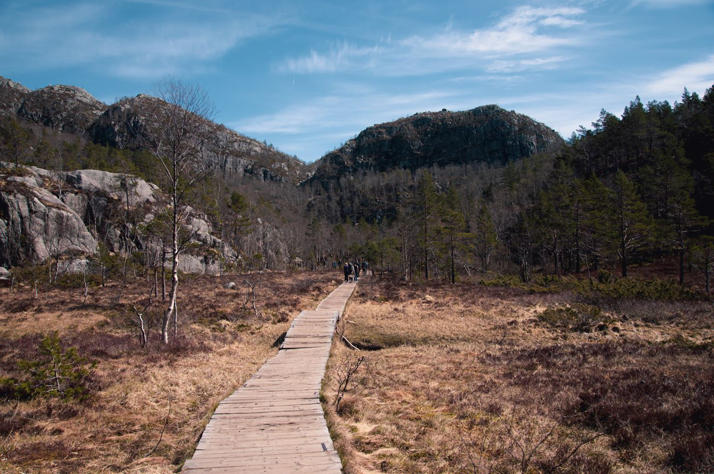
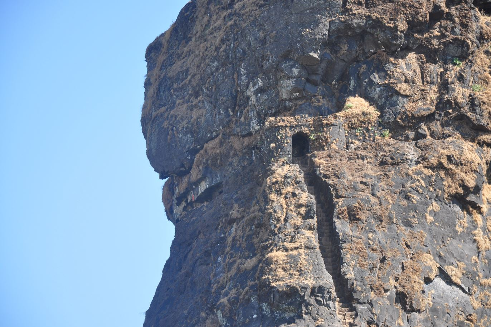
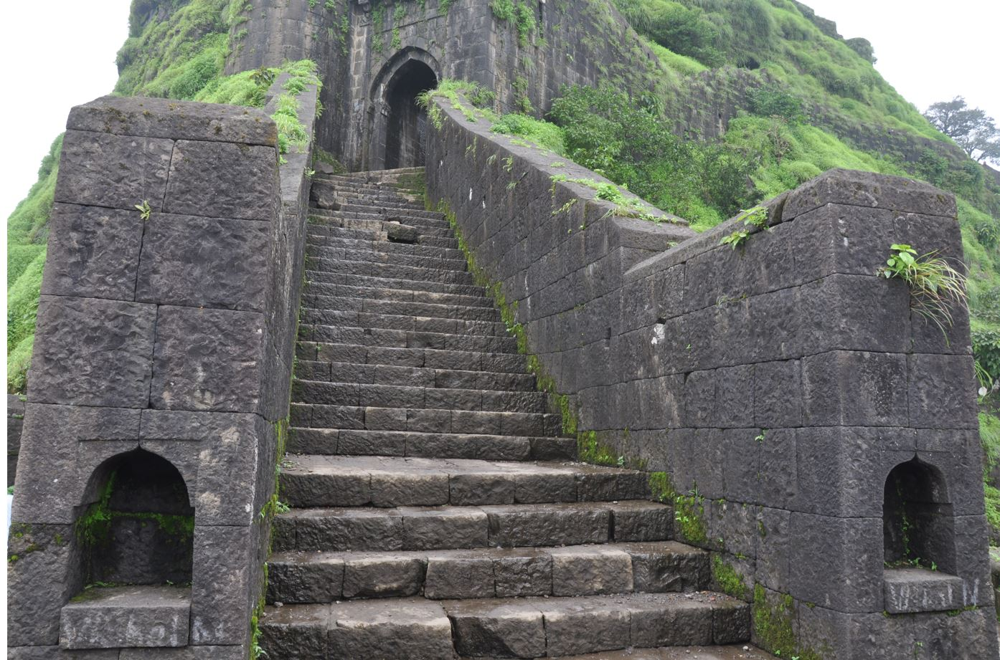
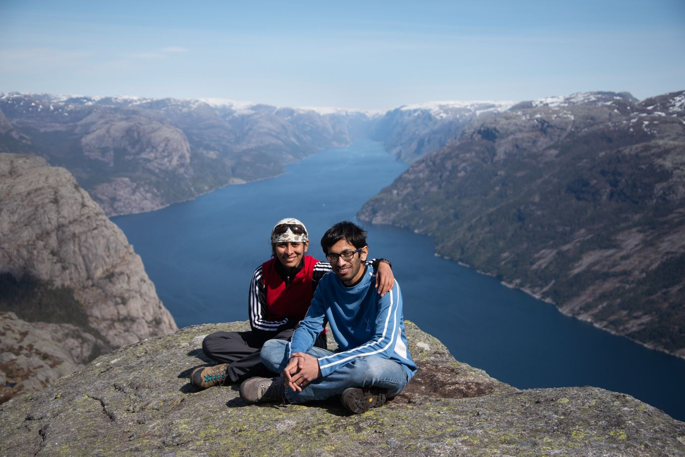

It's no secret that Norwegian wilderness is a paradise for nature lovers with plethora of opportunities for camping in the wild, hiking and trekking. Some of its fjords are a UNESCO World Heritage sites, like the famous Geiranger Fjord. We recently visited Preikestolen, a 600 meter rock on the Norwegian Lysefjord, and experienced this iconic attraction ourselves. An easy one-hour hike got us to the exposed top and showered upon us its surreal, sublime views. On our way we were pleasantly surprised to meet a bunch of Sherpas from Nepal who were busy building a new stone staircase on the trail. So how exactly does the Norway-Nepal logistics work?


With more boots stamping on their most popular trails, Norway introduced a plan to assemble an expertly engineered carpet of stone staircase or Sherpa stairs along their popular trails. Under this initiative, more than 400 trails will be converted into a mountain staircases. Trail erosion is a real problem in many regions with stand-out views, that are made popular by Instagram. These stone steps are indicative of Norway's long term plan to make the plush trekking trails more environmental and maintenance friendly by tackling the problem of trail erosion and ground disintegration. And to accomplish this superhuman task, Norway invited Sherpas, the mountaineers indigenous to the slopes of Mt. Sagarmatha (popularly known as Mt. Everest in the west) who are are born to endure and thrive in these hardships. They naturally become fit for these job.

South East-Asia's one of the prominent signatures is its long and ancient history of rock-cut architecture and stone-cutting. It could be regarded as the world capital of outdoor stairways: superbly engineered stone steps that lead to the nature's most beautiful viewpoints. Almost any mountain fortresses, monasteries, mountain meditation cavelets had stone staircase either carved or built directly into the mountain. Out of many examples, the steps of Harihar fort, steps of Kalavantin near Mumbai, Tibetian monasteries from Ladakh cross my mind. So next time you stumble upon a stone-staircase, remember you are walking on top of a historically significant piece of an age-old engineering technique.


How to reach Preikestolen: Starting point is Stavanger, which is easily accessible by a bus from Bergen. Take a ferry from Stavanger to Tau, and a bus from Tau to the Mountain lodge (starting point of the hike). The buses from Tau correspond with ferry times, so there will always be one waiting for you. Just take note of the last bus and last ferry timings before you start your hike.

Or you can now drive or take a bus through the world's longest under-sea tunnel from Stavanger to the starting point of the hike via Tau.